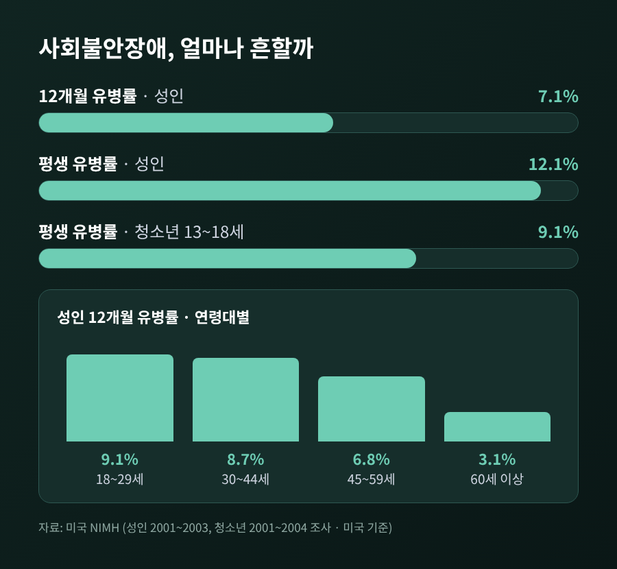
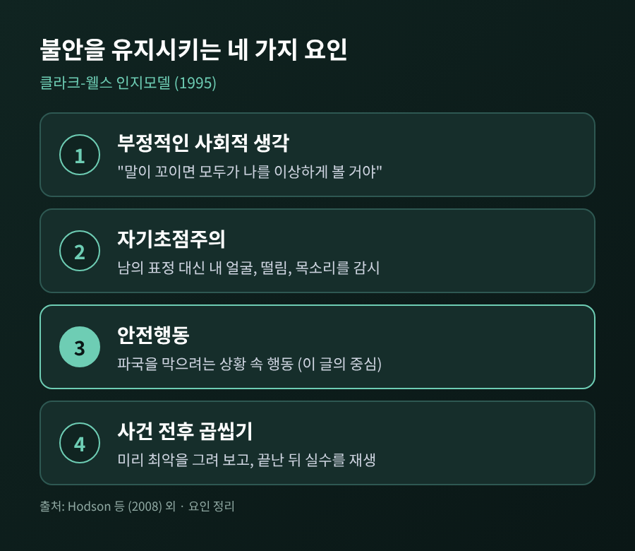
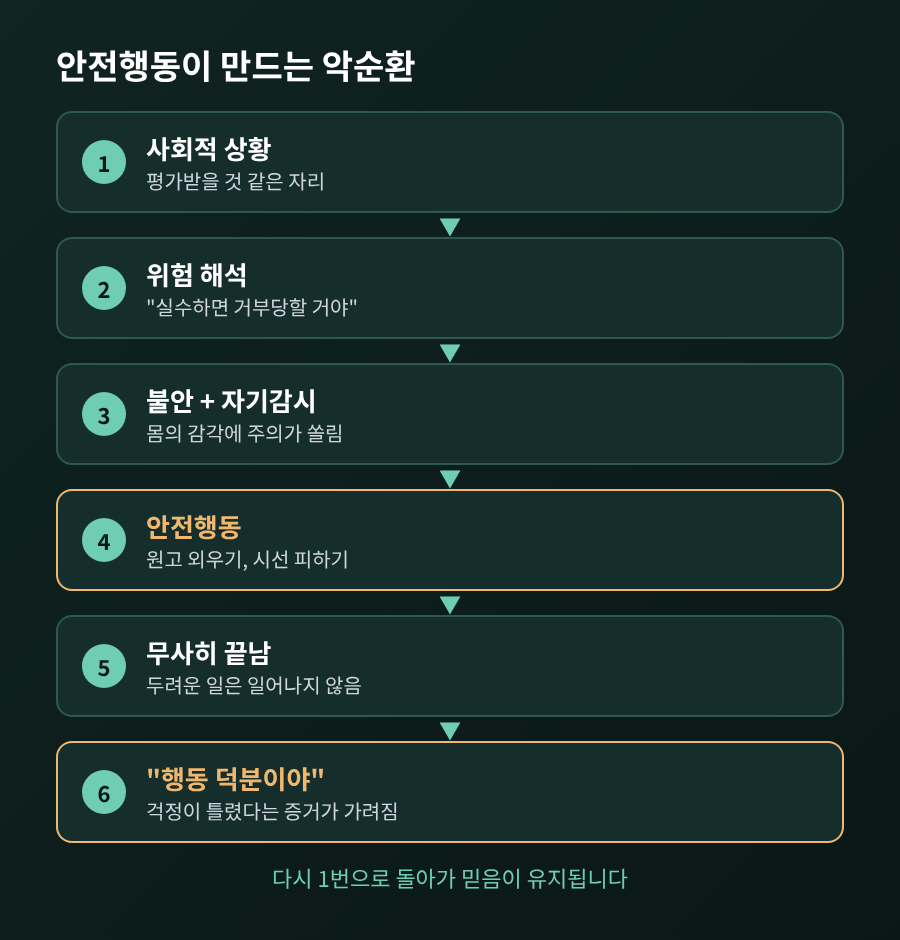
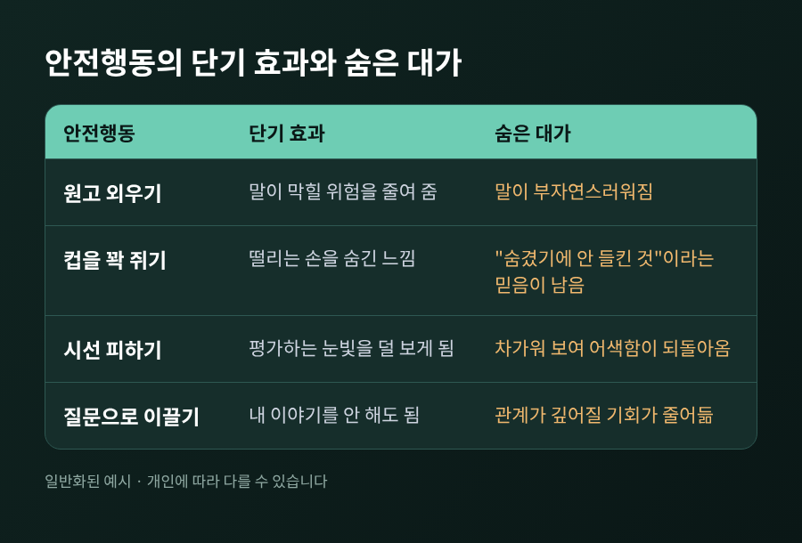
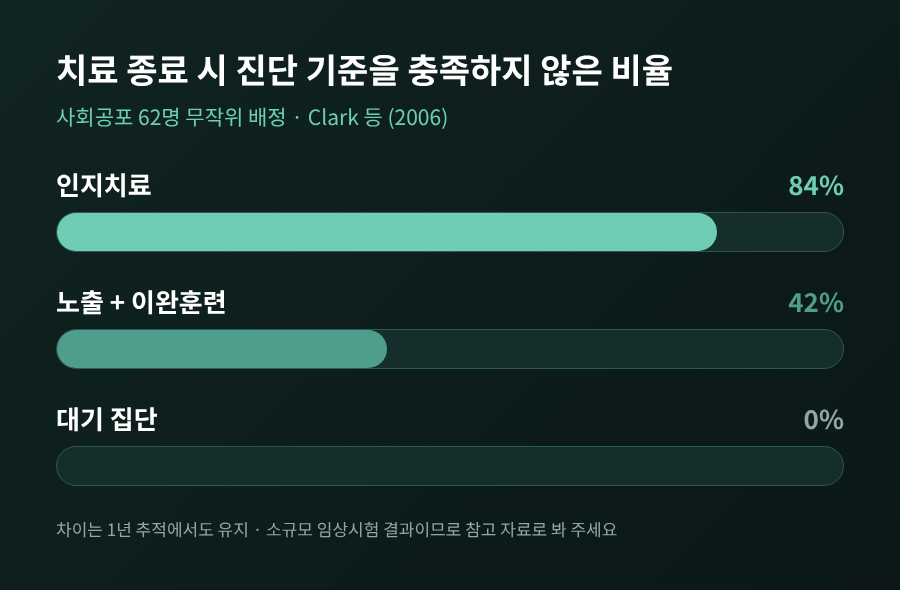

사회불안 인지모델과 안전행동, 불안을 줄이려다 오히려 유지시키는 이유

세 줄 요약
- 사회불안은 막연한 소심함이 아니라, 생각·주의·행동이 맞물려 스스로 유지되는 구조로 설명됩니다.
- 그 구조의 핵심 고리가 안전행동입니다. 불안을 낮추려는 행동이 "내 걱정이 틀렸다"는 증거를 가려 버립니다.
- 안전행동을 알아차리고 치료자와 함께 실험해 보는 방식이 임상 연구에서 뒷받침됩니다.
이번 글에서는 사회불안의 인지모델과 안전행동이 어떻게 불안을 오래 붙들어 두는지 정리해 보겠습니다.
심리상담 이론을 중심으로 다루며, 사례는 여러 사람에게서 흔히 보이는 모습을 일반화해 소개합니다.
■ 사회불안은 얼마나 흔한가
사회불안장애는 낯선 사람이나 평가받는 상황에서 지나치게 두려워하고, 그 상황을 피하거나 힘겹게 견디는 상태를 말합니다.
미국 국립정신건강연구소(NIMH)가 정리한 성인 조사(2001~2003년 조사 자료)에서는 12개월 유병률이 7.1%, 평생 유병률이 12.1%였습니다.
연령별로 보면 18~29세가 9.1%로 가장 높았고, 60세 이상은 3.1%였습니다.
같은 자료에서 최근 1년 사이 장애를 겪은 사람의 약 30%(29.9%)는 고도 수준의 어려움을 보고했습니다.
청소년도 예외는 아닙니다. 13~18세의 평생 유병률은 9.1%였습니다.
영국의 임상 가이드라인 해설(2013년)은 이를 "약 10명 중 1명"으로 요약하면서, 치료를 받는 사람은 절반 정도에 그친다고 전합니다.
다만 이 수치는 미국에서 2000년대 초에 이루어진 조사입니다.
국내 수치는 이번 조사에서 확인하지 못했으므로, 규모를 가늠하는 참고치로만 받아들이시길 권합니다.

■ 클라크-웰스 모델: 불안이 스스로를 유지하는 구조
영국의 임상심리학자 클라크와 웰스는 1995년 사회공포의 인지모델을 제시했습니다.
이 모델에서 불안을 유지시키는 요인은 크게 네 가지로 정리됩니다.
부정적인 사회적 생각, 자기초점주의, 안전행동, 그리고 상황 전후에 이루어지는 곱씹기입니다.
먼저 부정적인 생각입니다.
"말이 꼬이면 모두가 나를 이상하게 볼 것이다" 같은 가정이 대표적입니다.
그 생각이 켜지면 주의가 안쪽으로 향합니다. 이것이 자기초점주의입니다.
상대의 표정을 살피는 대신, 내 얼굴이 붉어지는지, 목소리가 떨리는지를 감시하게 됩니다.
문제는 이때 얻는 정보가 '내가 느끼는 감각'뿐이라는 점입니다.
느낌이 곧 남에게 보이는 모습이라고 착각하기 쉽습니다.
세 번째가 안전행동이고, 이 글의 중심입니다. 뒤에서 자세히 보겠습니다.
마지막은 전후 처리입니다.
모임 전에는 최악의 장면을 미리 그려 보고(예기 처리), 끝난 뒤에는 실수를 반복 재생합니다(사후 처리).
한 연구(2011년, 비임상 40명)에서는 5분 스피치를 한 뒤의 사후 처리가 일상 대화 뒤보다 더 많았습니다.
또 부정적 가정은 우울이나 특성불안을 감안한 뒤에도 사후 처리를 독자적으로 예측했습니다.
사회불안이 높을수록 부정적 자기평가와 후회 섞인 생각이 더 많이 따라왔습니다.
이 모델이 성인에게만 해당하는 것도 아닙니다.
11~14세 아동 171명을 조사한 2008년 연구에서, 이 네 가지 요인은 사회불안 점수 변동의 48%를 설명했고 우울보다 사회불안을 더 강하게 예측했습니다.
비임상 아동 표본이라는 한계는 있지만, 구조가 연령을 넘어 비슷하다는 시사점은 있습니다.

■ 안전행동이란 무엇인가
안전행동은 두려운 일이 벌어지지 않게 막으려고 상황 안에서 하는 행동입니다.
회피가 상황 자체를 피하는 것이라면, 안전행동은 상황에는 들어가되 몸을 사리는 방식입니다.
흔히 이런 모습으로 나타납니다.
발표 전에 원고를 한 글자씩 외웁니다. 손이 떨릴까 봐 컵을 꽉 쥡니다.
눈이 마주치지 않도록 화면이나 휴대전화를 봅니다. 대화 중 질문을 던져 상대가 말을 이어가게 합니다.
모두 일시적으로 마음을 편하게 해 줍니다. 그래서 더 끈질기게 남습니다.
문제는 그 다음입니다.
모임이 무사히 끝나면 머릿속에는 이런 결론이 남습니다.
"원고를 외웠기에 망치지 않았다." "손을 숨겼으니 들키지 않았다."
두려운 일이 일어나지 않은 이유가 '애초에 일어날 일이 아니었기 때문'이 아니라 '행동 덕분'이 되어 버립니다.
걱정이 틀렸다는 증거가 쌓여야 하는데, 오히려 걱정이 옳았다는 믿음이 보호받는 셈입니다.
안전행동은 이렇게 불안을 줄이는 동시에 불안의 근거를 지켜 줍니다.

안전행동은 대가도 치릅니다.
외운 원고에 매달리면 말이 부자연스러워지고, 시선을 피하면 차갑게 보일 수 있습니다.
실제로 어색해진 반응을 보고 "역시 나는 이상하다"고 확인하는 일이 생깁니다.
스스로 만든 어색함이 다시 걱정의 증거로 되돌아오는 것입니다.
2025년에 발표된 일기 연구가 이 지점을 보여줍니다.
18~33세 약 100명(사회불안장애 54명 포함)이 21일 동안 일상의 상호작용을 기록했습니다.
데이트 중에는 두 집단 모두 안전행동이 늘었지만, 사회불안장애 집단에서 그 증가폭이 유의하게 더 컸습니다.
또 데이트 중 안전행동은 부정 정서와 연결되었고, 이 연결도 사회불안장애 집단에서 더 강했습니다.
긍정 정서와는 유의한 관련이 없었습니다.
안전행동이 많을수록 기분이 좋아지는 것은 아니라는 이야기입니다.

■ 안전행동을 줄이면 무엇이 달라지는가
이 가설을 직접 검증한 초기 실험이 있습니다.
웰스와 클라크 등이 1995년에 발표한 연구입니다.
사회공포 환자 8명이 두 번의 회기를 거쳤습니다. 한 번은 노출만, 다른 한 번은 노출에 안전행동 줄이기를 더했습니다.
순서는 사람마다 번갈아 배정했습니다.
결과는 분명했습니다.
안전행동을 줄인 회기에서 상황 안의 불안과 파국에 대한 믿음이 모두 유의하게 더 낮아졌습니다.
같은 상황에 서 있어도, 안전행동을 쥐고 있으면 '배울 기회'가 막혀 있었던 셈입니다.
표본이 8명뿐이라는 한계는 분명히 기억해 두어야 합니다.
한 가지 단서를 달아야 합니다.
2023년 연구에서는 비임상 대학생 130명이 4주 온라인 워크북으로 안전행동 줄이기를 연습했습니다.
주된 분석에서는 안전행동도, 불안도 대조군과 유의한 차이가 없었습니다.
탐색적 분석에서는 안전행동을 실제로 줄인 사람들이 오히려 불안을 더 높게 보고하기도 했습니다.
저자들도 재현이 필요한 결과라고 선을 그었고, 측정한 것은 사회불안이 아니라 전반적 불안이었습니다.
두 연구를 나란히 놓으면 이렇게 읽힙니다.
안전행동을 무작정 끊는 것이 답은 아니라는 것입니다.
무엇을 왜 줄이는지, 줄였을 때 어떤 일이 벌어지는지를 함께 확인하는 과정이 필요해 보입니다.
■ 상담에서는 어떻게 다루는가
클라크-웰스 모델에 기반한 인지치료는 이 고리를 직접 겨냥합니다.
영국 NICE의 사회불안장애 임상 가이드라인(2013년 5월)은 개인 CBT를 우선 권고합니다.
이 모델 기반 치료는 회기당 90분, 최대 14회기, 약 4개월 구성이며 비디오 피드백, 행동실험, 재발방지가 포함됩니다.
또한 자기초점주의와 안전추구행동이 불안에 미치는 악영향을 체험으로 확인하는 연습이 들어가야 한다고 명시합니다.
평가 단계에서 안전행동을 살피는 것도 권고에 포함됩니다.
행동실험은 이런 식으로 진행됩니다.
"원고 없이 말하면 실제로 어떻게 될까"처럼 예측을 먼저 말로 적습니다.
그다음 안전행동을 쓸 때와 쓰지 않을 때를 비교해 봅니다.
결과를 보며 예측이 맞았는지 확인합니다.
영상으로 내 모습을 다시 보면, 머릿속에 그렸던 모습과 실제가 다르다는 것도 알게 됩니다.
효과를 본 연구도 있습니다.
2006년 임상시험에서 사회공포 62명을 인지치료, 노출과 이완훈련, 대기 집단으로 나누었습니다.
치료 종료 시점에 진단 기준을 더 이상 충족하지 않은 비율은 인지치료 84%, 노출과 이완훈련 42%, 대기 0%였습니다.
이 차이는 1년 추적에서도 이어졌습니다.
2003년의 다른 시험(60명, 16주)에서는 인지치료가 플루옥세틴(약물)과 자기노출 조합, 위약과 자기노출 조합보다 우월했고, 그 우위는 12개월 추적에서도 약물 조합 대비 유지되었습니다.
다만 표본이 수십 명 규모인 단일 연구팀의 결과라는 점은 감안해야 합니다.

■ 오늘부터 해 볼 수 있는 관찰
스스로 판단하는 진단이나 처방은 권하지 않습니다.
다만 관찰은 누구나 해 볼 수 있습니다.
- 불안했던 상황 하나를 떠올려 봅니다.
- 그때 '혹시나 해서' 했던 행동을 적어 봅니다.
- 그 행동을 안 했다면 어떤 일이 생길 거라고 예상했는지 적습니다.
- 그 예상이 실제로 확인된 적이 있는지 돌아봅니다.
예상이 근거 없이 굳어 있다는 것을 알아차리는 것만으로도 출발점이 됩니다.
정리하면 이렇습니다.
불안을 줄이려는 노력이 불안을 지탱하는 기둥이 될 수 있습니다.
"안전행동은 불안을 달래 주지만, 걱정이 틀렸다는 사실은 알려 주지 않는다."
이 글은 이론을 소개하는 일반 정보이며, 진단이나 치료를 대신하지 않습니다.
일상에서 사람을 만나는 일이 오래 힘겹거나 생활에 지장이 크다면, 혼자 견디기보다 정신건강의학과나 심리상담 전문가와 상의해 보시길 권합니다.
올해가 가기 전, 한 번쯤 도움을 청해 보시겠냐고 묻는다면 저는 늦지 않았다고 답하겠습니다.